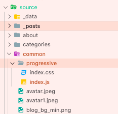

一、背景
博客从 next 主题迁移到了 butterfly 主题，给首页换上了好看的大图。但是实际发布到 github 后发现网速较慢时，图片是自上到下慢慢加载的，很不美观。

调研了一圈别人 butterfly 主题的博客，发现主要是以增加全局的加载动画和去掉首图这两种方案为主。我一方面不想让加载动画覆盖于整个博客上，另一方面想保留首图效果。所以最终还是想以优化首图加载效果为主。一开始想用渐进式图片的方案，可即使将图片改为 progressive jpeg ，加载效果也不够理想，马赛克着实影响体验。而之前逛 medium 时，有研究过 medium 的图片加载方案，于是参考其方案封装了对应的渐进式加载模块，优化了整体的加载效果。效果如下：(gif 可能有失真，可回到本博客首页减小网速后体验实际效果)
上述代码已经简单地抽离为 gist，详细地址见：
https://gist.github.com/Demian1996/d7ae29cb39b4091e6a64e05984dd475b
二、模块接入
1、新建和注入脚本
在 source 下新建 progressive 目录，新建 index.js 和 index.css 文件。

2、修改 butterfly 配置
在配置文件中修改配置，使得网页加载时能够自动加载脚本文件和样式文件
1 | inject: |
3、接入 gist 代码
将上面 gist 中的 index.js 和 index.css 中的代码分别拷入 progressive 下的文件中。然后如下方例子那样调用即可。
1 | // 传入小图和大图的地址; |
由于不同主题下，页面的 dom 结构和 header 节点的 id 可能不同，所以在使用模块时，需要自行修改对应的传参。
三、原理简介
该渐进加载模块简化了 medium 的加载逻辑，简化后的流程图如下：
下面将分步骤讲解
1、初始化
首先要完成该模块的 dom 结构，如下所示：
1 | <header> |
此时两张背景图的 visible 都设置为 false，默认在加载完成前不可见。另外，小图还要设置高斯模糊的遮罩样式，处理失真问题：
1 | .pl-blur { |
2、加载小图
首先初始化 image 对象，并绑定 onload 事件
1 | class ProgressiveLoad { |
然后通过设置 image 对象的 src 值，触发 image 对象加载图片。
1 | class ProgressiveLoad { |
最后执行 onload 完成事件，展示压缩过的背景图。
3、加载大图
流程基本同小图一致。由于大图的 dom 节点在小图之后且两者均为绝对定位，所以大图的层级在小图之上。当大图加载完成后，只需要修改大图的 visible 状态，即可展示最终的超清大图。
四、可优化点
从上面优化后的实际效果图会发现，在网速特别慢的情况下，小图也需要几秒加载时间，所以最开始会显示几秒的默认背景色。
那么如何跳过该阶段，直接显示小图呢？
也很简单，做一下取舍即可。首先，将背景色设置为 none 或者白色，然后将压缩后的图片转为 base64，直接写入小图的 backgroundImage 即可。由于小图特别小，所以可以通过将小图转为 base64，通过牺牲一点点首屏渲染的时间，使得页面一开始就显示小图背景，跳过显示背景色的阶段。